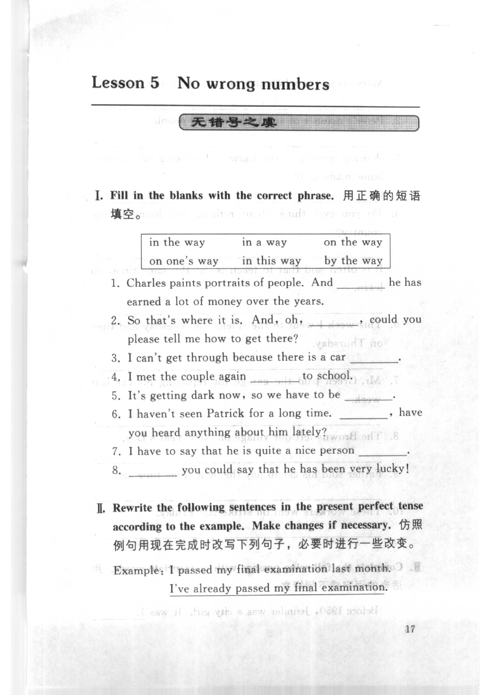
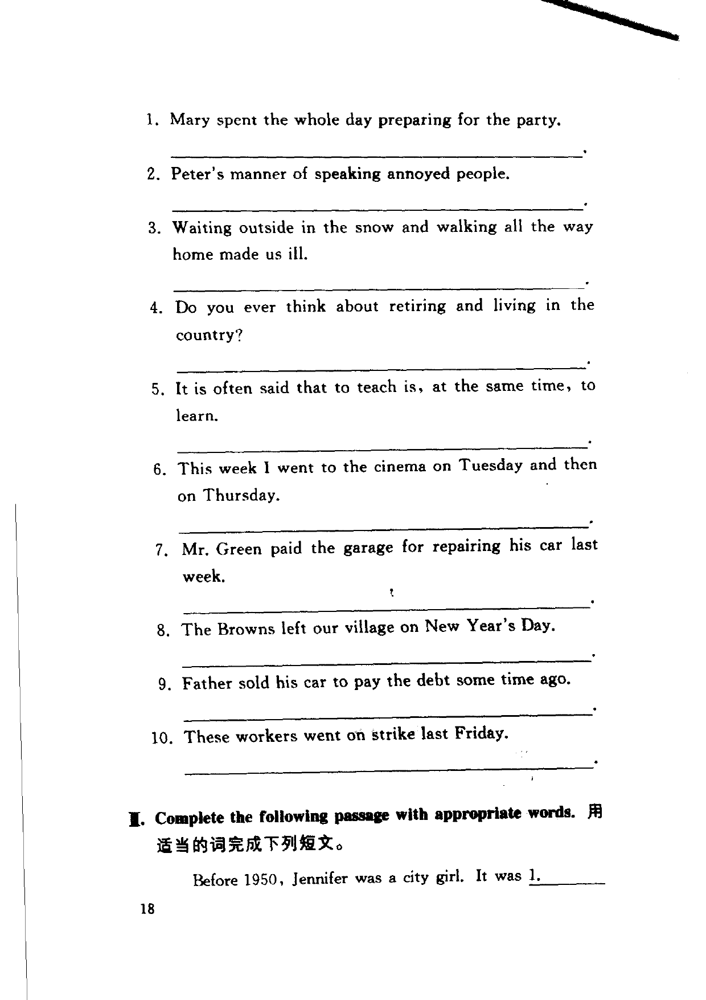
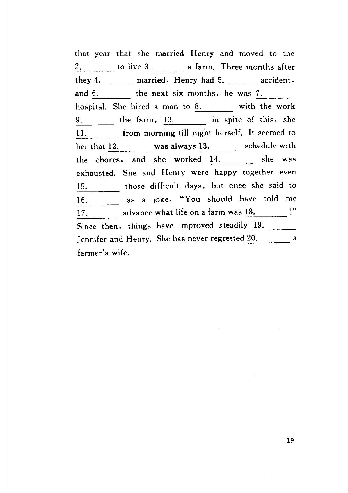

Grammar exercises · 语法练习
I. Fill in the blanks with the correct phrase.
用正确的短语填空。
in the way · in a way · on the way · on one's way · in this way · by the way
-
I. Phrases with way — Charles paints portraits of people. And he has earned a lot of money over the years.
-
I. Phrases with way — So that's where it is. And, oh, , could you please tell me how to get there?
-
I. Phrases with way — I can't get through because there is a car .
-
I. Phrases with way — I met the couple again to school.
-
I. Phrases with way — It's getting dark now, so we have to be .
-
I. Phrases with way — I haven't seen Patrick for a long time. , have you heard anything about him lately?
-
I. Phrases with way — I have to say that he is quite a nice person .
-
I. Phrases with way — you could say that he has been very lucky!
II. Rewrite the following sentences in the present perfect tense according to the example. Make changes if necessary.
仿照例句用现在完成时改写下列句子，必要时进行一些改变。
Example · 例句
I passed my final examination last month.
I've already passed my final examination.
-
II. Present perfect — Mary spent the whole day preparing for the party.
-
II. Present perfect — Peter's manner of speaking annoyed people.
-
II. Present perfect — Waiting outside in the snow and walking all the way home made us ill.
-
II. Present perfect — Do you ever think about retiring and living in the country?
-
II. Present perfect — It is often said that to teach is, at the same time, to learn.
-
II. Present perfect — This week I went to the cinema on Tuesday and then on Thursday.
-
II. Present perfect — Mr. Green paid the garage for repairing his car last week.
-
II. Present perfect — The Browns left our village on New Year's Day.
-
II. Present perfect — Father sold his car to pay the debt some time ago.
-
II. Present perfect — These workers went on strike last Friday.
III. Complete the following passage with appropriate words.
用适当的词完成下列短文。
Before 1950, Jennifer was a city girl. It was
1. that year that she married Henry and moved to the
2. to live
3. a farm. Three months after they
4. married, Henry had
5. accident, and
6. the next six months, he was
7. hospital. She hired a man to
8. with the work
9. the farm,
10. in spite of this, she
11. from morning till night herself. It seemed to her that
12. was always
13. schedule with the chores, and she worked
14. she was exhausted. She and Henry were happy together even
15. those difficult days, but once she said to
16. as a joke, "You should have told me
17. advance what life on a farm was
18.!" Since then, things have improved steadily
19. Jennifer and Henry. She has never regretted
20. a farmer's wife.
-
III. Jennifer — It was that year that she married Henry
-
III. Jennifer — and moved to the to live
-
III. Jennifer — to live a farm
-
III. Jennifer — Three months after they married
-
III. Jennifer — Henry had accident
-
III. Jennifer — and the next six months
-
III. Jennifer — he was hospital
-
III. Jennifer — She hired a man to with the work
-
III. Jennifer — the work the farm
-
III. Jennifer — in spite of this, she
-
III. Jennifer — she from morning till night herself
-
III. Jennifer — It seemed to her that was always
-
III. Jennifer — was always schedule with the chores
-
III. Jennifer — and she worked she was exhausted
-
III. Jennifer — happy together even those difficult days
-
III. Jennifer — but once she said to as a joke
-
III. Jennifer — You should have told me advance
-
III. Jennifer — what life on a farm was !
-
III. Jennifer — things have improved steadily Jennifer and Henry
-
III. Jennifer — She has never regretted a farmer's wife
Original images · 原图对照
Expand a page to compare it with the transcription. Open the original in a new tab to zoom in.
展开原图核对文字，也可以在新标签页打开原图放大查看。
Book page 1 · Exercise I (phrases with way, items 1–8)
Open original · 打开原图 ↗ Download original · 下载原图


Book page 2 · Exercise II (present perfect, items 1–10)
Open original · 打开原图 ↗ Download original · 下载原图


Book page 3 · Exercise III (Jennifer passage, blanks 1–20)
Open original · 打开原图 ↗ Download original · 下载原图


Your notes and answers
Use this space for longer responses or exercises that do not have an individual answer box.